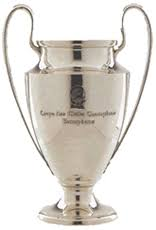
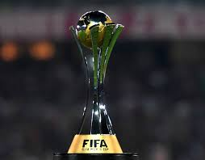
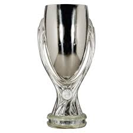
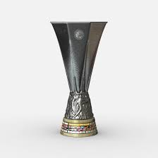
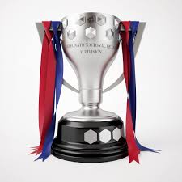
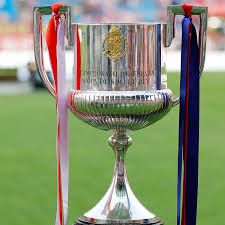
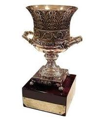

Real Madrid has won many trophies in European and woldwide competitions, the club has won a record 25 trophies; a record 13 European Cup/UEFA Champions League titles, two UEFA Cups and four UEFA Super Cups. In international football, they have achieved a record six club world championships. They have also won many more that go back from their beginning years as a club.
FIFA Club of the Century was an award presented by FIFA to decide the greatest football club of the 20th century. Real Madrid was the winner of the award, announced at the annual FIFA World gala, held in Rome on 11 December 2000. This was the first and only time they had won this award.

RealMadrid has won 13 European Cups since being a club starting from as far back as 1955 and as recent as 2018.

The FIFA Club World Cup is a FIFA-organised international club football tournament between the champion clubs from each of the six continental confederations, as well as the national league champion from the host country. RealMadrid has won this 6 times.

The UEFA Super Cup is an annual football match organised by UEFA and contested by the reigning champions of the two main European club competitions. RealMadrid has wont this 4 times since it's clubs existence.

The UEFA Europa League is an annual football club competition organised by UEFA since 1971 for eligible European football clubs. Clubs qualify for the competition based on their performance in their national leagues and cup competitions. RealMadrid has participated in this tournament many times, but has won it only 2 times.

The Campeonato Nacional de Liga de Primera División, commonly known as La Liga, is the men's top professional football division of the Spanish football league system. RealMadrid has won their league 33 times starting from 1931, to as recent as 2017.

The Copa Del Rey is an annual knockout football competition in Spanish football, organized by the Royal Spanish Football Federation. The competition was founded in 1903, thus making it the oldest Spanish football competition. RealMadid has won this tournament 19 times. The most recent win for the club was in 2014.

The Spanish Super Cup is a Spanish football championship contested by the winners of La Liga and the Copa del Rey. In the event that a team wins both La Liga and the Copa del Rey, the runners up of the Copa del Rey will play against the winner of La Liga. RealMadrid has won this 10 times, with it's most recent victory being in 2017.